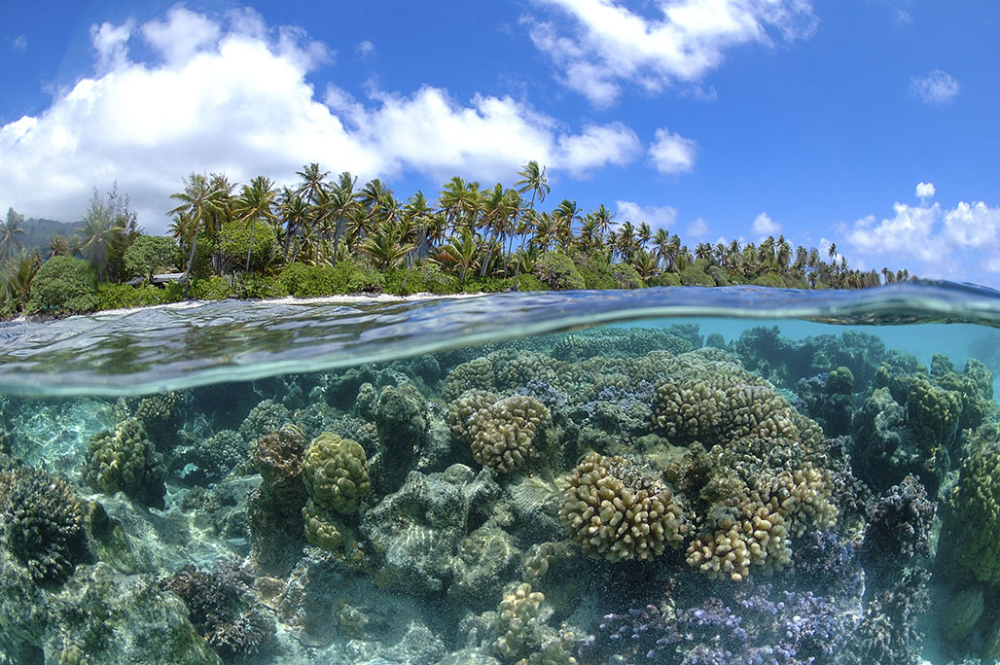
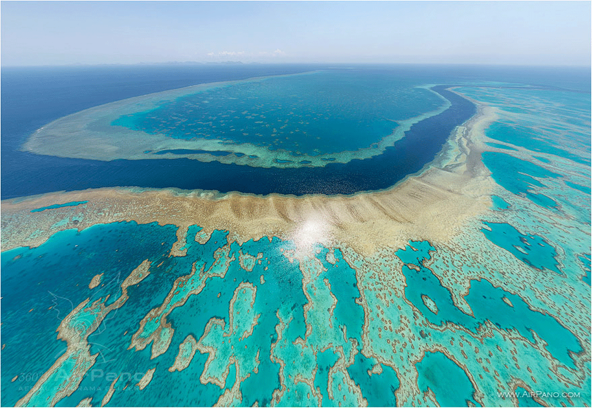
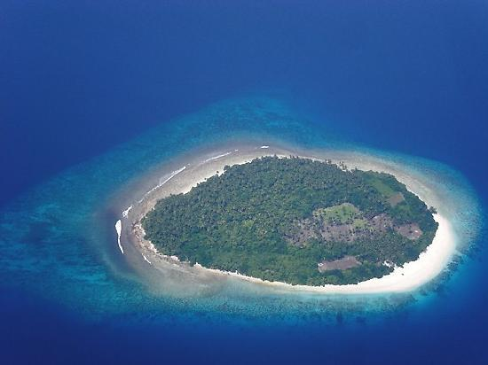
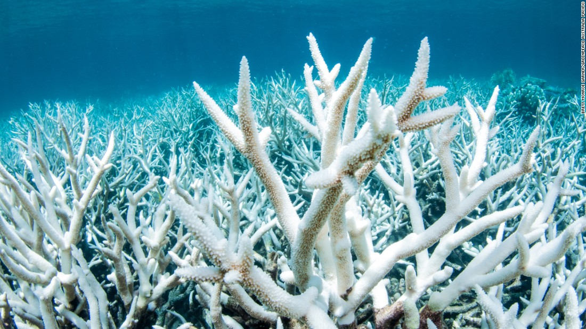

Coral reefs are like underwater neighbourhoods. They are teeming with life and harbour many species of fish. Many people snorkel near reefs because they attract a lot of marine life.
Coral reefs do a great deal for the environment near the coastal regions. They help protect the shore from the constant crashing of waves, the aggression of storms and floods. This helps prevent erosion, since the coral reef provides a natural barrier for the shore. In the absence of coral reefs, a lot of sand and soil could be lost from the shore and habitats could be destroyed. It's important to learn about coral reefs and their purpose so we will understand why we need to keep them healthy.
Animals That Live On Coral Reefs:
Just about any sea creature can make a coral reef it’s home. Some coral reefs can hold up to 3500 species of plants and animals, reason being that it helps the animals get shelter. For example, if a fish wants to escape from a predator, it can hide in the crevices of the coral reef. A good example of a supportive coral reefs are those in Hawaii, which protect animals that do not live anywhere else on Earth. Nearly everything living on a coral reef or in it is food for another organism sharing the space, so in this way the coral reef becomes an extremely complex food web.
The sea anemone and the clownfish are an example of how the coral reef helps shelter wildlife. This kind of relationship is called a symbiotic relationship, because both organisms help each other. Since sea anemones cannot move around to catch their prey because they are a part of the coral reef, they can occasionally catch shrimp as they swim by using the barb in their tentacles. The barb is poisonous to most fish except for clownfish, so it protects the sea anemones from predators among the coral reef. The clownfish can seek shelter within the sea anemone from predators, and in turn it helps the sea anemone by eating the pests that might harm it. This partnership is an example of how coral reefs help species flourish.
Firstly, coral reefs are found near shallow water since they need the sun to survive. The individual coral is made of animals for polyps, which are tiny since it takes thousands of them to make a single piece of coral. These polyps make food for the coral by interacting with an algae called zooxanthellae, which uses photosynthesis to create oxygen, sugar and fat. While the polyp provides the coral food, the coral makes food for the algae as well. Even though coral doesn't look alive, it is in fact an animal and does prey on other creatures. The reason many corals aren't very big, however, is because some only grow a couple of millimeters a year, while the fastest can grow at 10 cm a year. Corals can be harmed easily since polyps are sensitive to any changes in their surroundings and if harmed the coral may recover very slowly or not at all if the damage is too great. However, groups of coral (which are called colonies) can live for up to 700 years if left undisturbed. To live a long life, or to not die at all, coral reefs need warm water (which is why they are only found in tropical areas), clear water (no slit or muddy water) and shallow water (because they have to be close to the Sun for the zooxanthellae to function.) and a hard substance to cling to and grow on as a stabilizer.
Reefs that are made near land are called fringing reefs because they "fringe" the coastline. The number of fringing reefs in the world is on a decline due to human meddling and the pollution of the environment.
Above is an example of a fringing reef. As you can see, it is very close to land. This kind of reef provides protection to the shore and against erosion.
Reefs that have water or a lagoon between them and land are called barrier reefs because they are a "barrier" to land. Barrier reefs are endangered from plastic, garbage and pollution as well. 
Above is an example of a barrier reef from above. As you can see, there is water all around and the reed isn't close to the shore, meaning this is a barrier reef.
The third kind of coral reef is called an atoll. Atolls are usually circular in shape and they often surround a lagoon.
Atoll reefs usually occur in the middle of the ocean but they are a rare occurrence in the Caribbean.
Humans have an enormous impact on the planet, and it’s time we started to watch our actions. Coral reefs are endangered due to the rising temperature of the oceans due to global warming/climate change, extra sediments in the water stirred up by boats, and water pollution. If coral reefs are completely wiped out, marine life would suffer immensely.
Coral dies in what is called coral bleaching. It is called bleaching, which means the coral turns white when it dies. First, when the coral is healthy, it has all it’s color which comes from the algae, meaning it is healthy. When the coral is stressed from some factors including sediments, pollution, and a change in water temperature, some algae leaves the coral, draining some of the color from the coral, making it paler. When the coral has completely been drained of all colour, the coral turns white and is easy to break off. When fast areas of coral dies, it is called a coral bleaching event. When a coral bleaching event occurs, all the animals that once depended and lived on the reef are now left unsheltered, so in a way they are homeless. All of these fish and other animals are easy prey for predators, showing that when a coral reef falls, every species suffers.
This is what a coral bleaching event looks like. It isn't often that only a couple of corals bleach at a time, since most of the stressing factors are enironmental, so miles and miles of corals are bleached because of their surroundings.
Coral reefs sensitive to changes such as global warming and climate change, and even a change in water temperature can kill them. How does coral die? Firstly, with a minor change in their environment, coral reefs can....idk